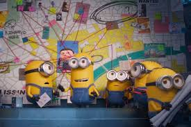

Sejarah Singkat Minions
Minions pertama kali muncul dalam film animasi "Despicable Me" pada tahun 2010. Mereka digambarkan sebagai makhluk kecil berwarna kuning dengan satu atau dua mata, yang selalu setia membantu bos mereka dalam berbagai misi kocak.
Film spin-off berjudul "Minions" yang dirilis pada tahun 2015 menceritakan asal-usul dan petualangan mereka mencari bos yang tepat.
Dengan gaya bahasa yang lucu dan perilaku konyol, Minions cepat menjadi ikon budaya pop dan sangat disukai oleh berbagai kalangan usia.
